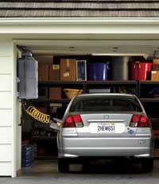

Buckle up, America ? the era of cheap oil is over. Whether the roadahead for gas prices will be a steep climb or a slow incline isanyone's guess. But don't expect to see gas prices drop below $2 agallon ever again. Odds are you're already feeling the pinch ofthis trend as gas prices skyrocketed given high demand versus lowsupply.
Drive a more fuel-efficient vehicle, however, and you can save asubstantial amount of money. Even if gas goes back to $2.20 agallon, annual gas expenses for a car that gets 25 miles per gallon(mpg) will total about $1,320. Switch to a 35-mpg car, though, andyou'll save $377 a year; a 50-mpg hybrid will save you $660 a year.Over a five-year period, your savings will add up to $1,886 and$3,300, respectively.
There also are benefits greater than saving money. 'Choosing whichvehicle to drive is one of, if not the, most importantenvironmental decisions a person can make,' says James Kliesch,principal vehicle analyst for the American Council for anEnergy-Efficient Economy (ACEEE) and lead author of ACEEE's annualenvironmental guide to cars and trucks.
A more fuel-efficient vehicle will also reduce your contribution toglobal warming. The more gas a vehicle burns, the more it emitscarbon dioxide (CO2), a greenhouse gas that traps the Earth's heatand plays a leading role in climate change.
For example, a 25-mpg vehicle emits 11,640 pounds of CO2 a year. A35-mpg vehicle emits 3,326 fewer pounds of CO2 each year; a 50-mpghybrid releases 5,820 fewer pounds annually.
The type of fuel also impacts its greenhouse gas emissions. Dieselfuel produces more CO2 than gasoline, whereas natural gas and E85(85-percent ethanol, 15-percent gasoline) produce less.
As with air pollution, the Environmental Protection Agency alsoprovides a greenhouse gas score for every vehicle model. The ratingranges from zero to 10 ? the higher the number, the less greenhousegases the vehicle emits. To view these scores for the mostfuel-efficient vehicles visit theAlternative Transportation Page.
|
 The natural-gas powered Honda Civic GX was named the most environmentally friendly 2005 vehicle by ACEEE. For information on the refueling appliance shown here, visit www.myphill.com. |
|
|